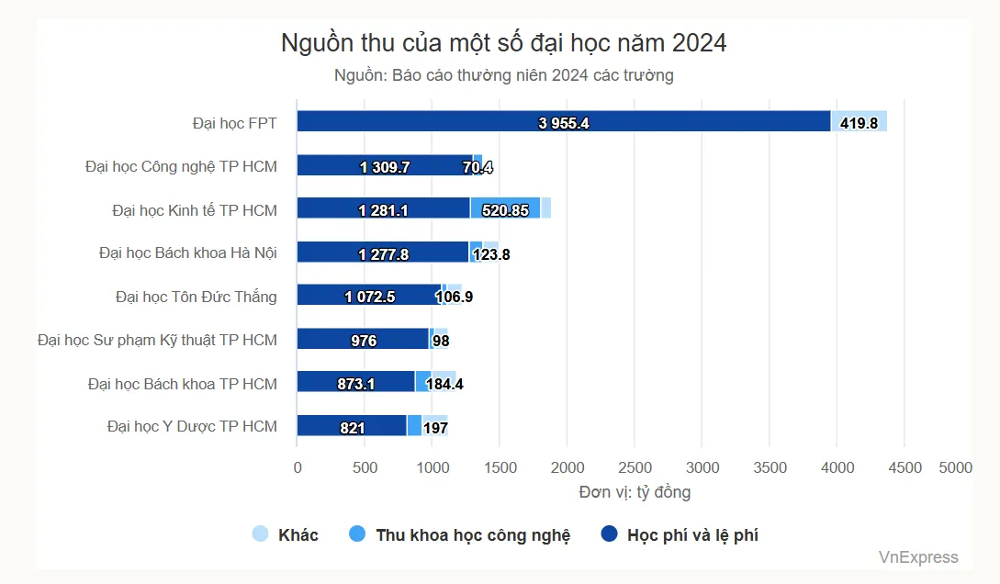
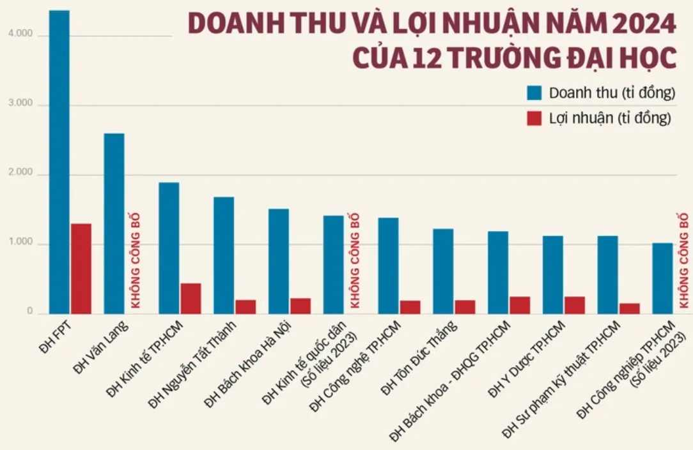

Vì sao các đại học lớn trên thế giới không sống nhờ vào học phí?
Posted: [Ngày đăng]
Mỗi khi mùa nhập học đến, mạng xã hội lại bùng nổ các cuộc tranh luận về việc học phí trường này tăng, trường kia đắt. Trong tâm thức của đại đa số người dân, trường đại học là nơi bán chữ, sinh viên là người mua, và học phí đương nhiên là nguồn sống quyết định sự sinh tồn của nhà trường. Nhưng có thật là mọi nền giáo dục trên thế giới đều vận hành theo tư duy thương mại đó? Câu trả lời là hoàn toàn không. Một trường đại học mà sống chết phụ thuộc vào tiền túi của sinh viên thường bị coi là dấu hiệu của một sự thất bại về quản trị tài chính. Khi nhìn ra thế giới, chúng ta sẽ thấy học phí thực chất chỉ là một phần rất nhỏ trong một bức tranh kinh tế giáo dục.
Nếu không phải học phí, họ lấy tiền từ đâu?
Các nghiên cứu về kinh tế giáo dục thường chỉ ra một hằng số tài chính an toàn. Đối với các đại học định hướng nghiên cứu, học phí chỉ nên chiếm tối đa không quá 30% tổng nhu cầu kinh phí vận hành. 70% còn lại phải được lấp đầy bởi các nguồn tiền khác. Dưới đây là từng trường hợp cụ thể, để thấy rõ mỗi nơi họ đã đa dạng hóa dòng tiền của mình như thế nào.
Tại Harvard (Mỹ), học phí niêm yết ở đây rất cao, nhưng phần thực thu (sau khi trừ các gói hỗ trợ tài chính) chỉ chiếm khoảng 21% đến 22% tổng doanh thu hoạt động. Nguồn tiền lớn nhất của Harvard, chiếm tới 40% đến 46% doanh thu hàng năm, đến từ phần lãi được rút ra từ Quỹ hiến tặng (Endowment) trị giá hàng chục tỷ USD. Quỹ này được tích lũy qua hàng thế kỷ từ tiền hiến tặng của cựu sinh viên, sau đó được một đội ngũ quản lý tài sản chuyên nghiệp mang đi đầu tư vào cổ phiếu, bất động sản và các quỹ đầu tư mạo hiểm. Phần còn lại đến từ các hợp đồng tài trợ nghiên cứu của chính phủ liên bang và các tổ chức tư nhân. Chính vì không cần tiền học phí để tồn tại, Harvard mới có thể áp dụng chính sách miễn học phí gần như toàn phần cho những gia đình có thu nhập thấp. Standfort (Mỹ) cũng có cấu trúc tương tự. Học phí chỉ đóng góp khoảng 25% vào quỹ vận hành chung. Nguồn sống lớn của trường đến từ quỹ hiến tặng của các cựu sinh viên tại Thung lũng Silicon, nhiều người trong số họ là những nhà sáng lập công nghệ tỷ phú, cùng các hợp đồng nghiên cứu khoa học ký với chính phủ Mỹ. Nhờ vậy Stanford miễn hoàn toàn học phí và chi phí ăn ở cho mọi sinh viên có gia đình thu nhập dưới 100.000 USD một năm.
UC Berkeley (Mỹ) là trường công, học phí sinh viên chỉ chiếm khoảng 30% đến 35% doanh thu. Phần lớn còn lại đến từ hai nguồn: ngân sách trực tiếp do chính quyền bang California cấp hàng năm, và các hợp đồng đấu thầu dự án nghiên cứu quốc gia từ Bộ Quốc phòng, Bộ Năng lượng Mỹ. Học phí ở đây mang tính chia sẻ gánh nặng với xã hội, không phải nguồn lợi nhuận chính của trường. MIT (Mỹ) kiếm tiền từ các hợp đồng nghiên cứu được. Mỗi năm, họ nhận hàng tỷ USD từ các cơ quan như Quỹ Khoa học Quốc gia, Bộ Quốc phòng, Viện Sức khỏe Quốc gia,... Các giáo sư tại MIT thành công huy động tiền nhờ việc xây dựng những dự án nghiên cứu có giá trị. Mô hình này tạo ra một vòng tuần hoàn trong đó chất xám tạo ra công nghệ, công nghệ tạo ra nguồn lực, và nguồn lực tiếp tục được tái đầu tư cho nghiên cứu.
Bước sang châu Á, mô hình liên minh Đại học và Doanh nghiệp tại Hàn Quốc lại biến trường đại học thành một đối tác nghiên cứu và phát triển, nhằm san sẻ gánh nặng chi phí cho những bài toán công nghệ lõi. Thay vì dồn toàn bộ áp lực tài chính và rủi ro thất bại vào chính doanh nghiệp, họ chọn cách chia sẻ bớt gánh nặng đó. Những bài toán công nghệ mang tính dài hạn, hoặc những thử nghiệm còn nhiều rủi ro, được đẩy sang cho các phòng thí nghiệm của trường đại học sân sau đảm nhiệm. POSTECH được thành lập và tài trợ bởi tập đoàn thép POSCO. Nguồn sống chính của trường đến từ cổ tức cổ phiếu POSCO mà quỹ giáo dục của trường nắm giữ, cùng các hợp đồng nghiên cứu ứng dụng trị giá hàng trăm triệu USD mỗi năm. Học phí niêm yết chỉ khoảng 5.000–6.000 USD một năm, nhưng phần lớn sinh viên xuất sắc được miễn hoàn toàn; nghiên cứu sinh còn được trả lương hàng tháng.
Tại Đại học Sungkyunkwan (SKKU), sau khi Samsung mua lại vào năm 1996, cấu trúc tài chính của trường dịch chuyển hẳn sang các hợp đồng nghiên cứu và phát triển độc quyền với tập đoàn này. Riêng những khoa liên kết trực tiếp như Khoa Hệ thống Bán dẫn, sinh viên được miễn 100% học phí, đổi lại phải làm việc cho Samsung một thời gian nhất định sau khi ra trường. Các bài toán công nghệ khó của tập đoàn được giao thẳng cho những phòng Lab trong trường xử lý. Giáo sư lúc này đóng vai trò như một người đứng đầu doanh nghiệp nhỏ đi săn hợp đồng, dùng số tiền có được để mua sắm máy móc và trả lương cho NCS. Cuối cùng, Samsung có công nghệ độc quyền, trường có bài báo quốc tế, còn sinh viên được miễn học phí kèm theo một khoản thu nhập (nhỏ) ngay khi còn đang học. Điều đáng chú ý là dòng tiền trong mỗi phòng Lab tại SKKU cũng không đến từ một nguồn duy nhất. Tiền có thể đến từ việc thắng thầu các quỹ của chính phủ như BK21, chuyển giao công nghệ, hoặc từ các hợp đồng nghiên cứu độc lập ký với chính những đối thủ của Samsung như Hyundai, LG,…. Chính sự san sẻ tài chính này giúp các trường sống khỏe bằng doanh thu từ chất xám thực chất, biến học phí sinh viên thành một khoản thu mang tính thủ tục.
Tại Đại học Korea hay Yonsei, các trường này không thuộc sở hữu của riêng một tập đoàn nào, nhưng vẫn giữ tỷ lệ phụ thuộc học phí ở mức thấp. Họ vận hành như những "siêu thị chất xám" trung lập, cùng lúc nhận hợp đồng nghiên cứu từ nhiều tập đoàn khác nhau như Hyundai, LG, SK Hynix. Họ cũng liên tục thắng thầu các quỹ quốc gia như BK21, mang về hàng chục triệu USD để trả lương cho các NCS. Mạng lưới cựu sinh viên giàu có và quyền lực của các trường này thường xuyên hiến tặng tài sản lớn. Yonsei còn tự vận hành một dây chuyền kinh doanh thương mại riêng, thương hiệu Sữa Yonsei được bán tại các siêu thị trên khắp Hàn Quốc, tạo thêm một nguồn thu phụ trợ ổn định.
Tại hệ thống Grandes Écoles (Pháp), mô hình phi thương mại hóa của họ gần như tuyệt đối. Học phí của sinh viên bản xứ gần như bằng không. Chính phủ Pháp đài thọ phần lớn chi phí vận hành thông qua tiền thuế của người dân. Đặc biệt, Pháp có cơ chế CIFRE. Đây là chương trình để doanh nghiệp và nhà nước cùng chia sẻ chi phí trả lương chính thức cho NCS làm luận án Tiến sĩ. NCS dành nửa thời gian ở phòng thí nghiệm của trường, nửa thời gian còn lại làm việc thực tế tại các công ty như Airbus, Renault, Thales. Giáo sư ở Pháp phần lớn là công chức, kiêm nhiệm giữa trường đại học và viện nghiên cứu quốc gia như CNRS, hưởng một mức lương ổn định theo thang bậc nhà nước.
Nhìn tổng thể, dù đi theo mô hình quỹ đầu tư như Mỹ, liên minh tập đoàn như Hàn Quốc, hay bao cấp nhà nước như Pháp, điểm chung của các nền giáo dục trên là học phí luôn được giữ ở vị trí phụ trợ. Phần lõi tài chính đến từ khả năng biến chất xám thành giá trị kinh tế thực: quỹ đầu tư sinh lời, hợp đồng nghiên cứu, chuyển giao công nghệ, và những mối quan hệ được nuôi dưỡng qua nhiều thế hệ cựu sinh viên.
Thực trạng ngược quy luật tại Việt Nam
Có lẽ chính chúng ta cũng đang hiểu sai về khái niệm "tự chủ đại học". Chúng ta thường gắn nó với học phí: nhà nước giảm hỗ trợ, trường tăng học phí, sinh viên trả nhiều tiền hơn. Nhưng ở nhiều đại học hàng đầu thế giới, tự chủ tài chính lại có một ý nghĩa rất khác. Đó không phải là sự phụ thuộc nhiều hơn vào học phí, mà là khả năng tạo ra nhiều nguồn lực tài chính khác nhau để giảm sự phụ thuộc vào học phí.
Số liệu công khai từ báo cáo tài chính năm 2024 của nhiều trường đại học cho thấy một đặc điểm chung: học phí vẫn là nguồn thu chủ đạo trong cơ cấu doanh thu. Đại học Kinh tế Quốc dân ghi nhận tổng doanh thu hơn 1.410 tỷ đồng, trong đó doanh thu từ NCKH và chuyển giao công nghệ chỉ khoảng 43 tỷ đồng, xấp xỉ 3%. Đại học Bách khoa Hà Nội có tổng doanh thu hơn 1.100 tỷ đồng, nhưng nguồn thu từ hoạt động KHCN chỉ chiếm một tỷ trọng nhỏ so với học phí. Ở nhiều trường khác, mức độ phụ thuộc vào học phí còn rõ rệt hơn. Đại học Kinh tế TP.HCM, Đại học Tôn Đức Thắng, Đại học Mở TP.HCM hay nhiều trường công lập tự chủ khác đều ghi nhận học phí chiếm khoảng 70–90% tổng doanh thu.

Bước sang khối trường tư thục và quốc tế tại Việt Nam, bức tranh tài chính càng cho thấy sự phụ thuộc nặng nề vào học phí với tỷ trọng đáng lo ngại. Với mô hình dựa trên quy mô tuyển sinh, các trường tư thục lớn hiện nay hầu như không có nguồn thu nào khác ngoài học phí. Tại Trường Đại học Công nghệ TP.HCM (HUTECH), doanh thu từ học phí nhiều năm liền chiếm trên 90% tổng doanh thu. Trường Đại học Nguyễn Tất Thành có tổng doanh thu tiệm cận 1.500 tỷ đồng nhưng học phí chiếm hơn 95%. Trường Đại học Văn Lang với doanh thu vượt mốc 2.300 tỷ đồng cũng ghi nhận dòng tiền chủ yếu đến từ học phí và các khoản phí dịch vụ sinh viên. Đáng chú ý hơn, ở phân khúc đại học quốc tế như Đại học RMIT Việt Nam, báo cáo tài chính ghi nhận doanh thu vượt 3.800 tỷ đồng nhưng tỷ trọng học phí lên tới hơn 98%.
Nguyên nhân giả thiết
Nguyên nhân của khoảng cách này nằm ở việc quy trình chuyển hóa chất xám thành giá trị kinh tế chưa được hình thành đầy đủ. Cơ chế tài trợ nghiên cứu trong nước vẫn mang nặng tính hành chính, với nhiều thủ tục xin cấp vốn, giải ngân và quyết toán, trong khi nguồn lực dành cho nghiên cứu còn hạn chế. Điều này làm giảm động lực cạnh tranh ý tưởng, xây dựng nhóm nghiên cứu và phát triển các dự án dài hạn.
Bên cạnh đó, mô hình tài chính của nhiều trường đại học vẫn phụ thuộc lớn vào học phí, trong khi các nguồn thu từ nghiên cứu, chuyển giao công nghệ, hợp tác doanh nghiệp chưa phát triển tương xứng. Đối với nhiều giảng viên, mức lương cơ bản chưa đủ để trở thành nguồn thu nhập chính, khiến việc tăng giờ giảng trở nên phổ biến. Khi phần lớn thời gian dành cho việc giảng dạy để đảm bảo thu nhập, năng lực nghiên cứu, viết proposal cũng bị suy giảm.
Trong nhiều hệ thống đại học nghiên cứu trên thế giới, nghiên cứu sinh được xem là lực lượng lao động tri thức, được tài trợ để tạo ra các công trình nghiên cứu có giá trị mới cho trường đại học. Ngược lại, tại Việt Nam, nghiên cứu sinh thường phải tự chi trả học phí trong khi cơ hội được tham gia các dự án có tài trợ còn hạn chế. Điều này khiến nhiều người có năng lực lựa chọn ra nước ngoài, còn một bộ phận ở lại chủ yếu xem bằng cấp như công cụ thăng tiến thay vì con đường phát triển khoa học. Khi nghiên cứu thiếu động lực ứng dụng và gắn kết với doanh nghiệp, nhiều công trình dễ trở thành sản phẩm phục vụ hồ sơ học thuật hơn là tạo ra giá trị thực tế.
Mối liên kết giữa nhà trường và doanh nghiệp vì thế cũng đứt gãy. Những tập đoàn lớn trong nước như Viettel, Vin, FPT chọn cách tự bỏ tiền lập viện nghiên cứu riêng. Ngay cả các phong trào khởi nghiệp sinh viên cũng vướng vào rào cản pháp lý của Luật Quản lý tài sản công. Việc định giá và mang tài sản trí tuệ hình thành từ ngân sách nhà nước đi góp vốn thành lập doanh nghiệp là một quy trình cực kỳ phức tạp và nhiều rủi ro pháp lý. Kết quả là phần lớn các cuộc thi startup chỉ dừng ở mức phong trào, lấy thành tích, chứ chưa hình thành được những công ty spin off thực chất như mô hình các nước khác.
Khi cả ba nguồn thu, nghiên cứu khoa học, chuyển giao công nghệ, tài trợ từ doanh nghiệp và cựu sinh viên, đều gần như đóng băng, các trường đại học Việt Nam chỉ còn một lựa chọn duy nhất và dễ dàng nhất để tồn tại sau khi bị cắt bao cấp. Đó là quay lại khai thác triệt để tiền túi của người học.
Hệ lụy
Khi 70% đến 95% nguồn sống của cả một bộ máy vận hành phụ thuộc vào số lượng sinh viên nhập học, một logic kinh tế tất yếu sẽ xảy ra. Đây là một sự ăn mòn dần bản chất của giáo dục, biến nó từ nơi sản xuất tri thức thành một cỗ máy in tiền dưới lớp vỏ học thuật.
Khi sinh viên trở thành khách hàng, và khách hàng thì luôn luôn đúng, đề thi được ra dễ dần qua từng năm để tỷ lệ rớt môn ở mức thấp nhất có thể. Giảng viên bị áp lực ngầm, đôi khi không thành văn nhưng ai cũng hiểu, rằng không được cho điểm quá thấp, không được đánh trượt hàng loạt. Vì mỗi sinh viên rớt môn hay bị đuổi học là một khoản thu bị đe dọa. Đánh giá năng lực thực chất trở thành thứ xa xỉ mà nhà trường không dám làm, vì làm đúng nghĩa là tự cắt vào doanh thu của chính mình. Hệ quả là nhà trường từ bỏ hoàn toàn vai trò tồn tại của mình: làm bộ lọc chất lượng cho xã hội. Vai trò sàng lọc ấy, đáng lẽ phải được thực hiện ngay trong bốn năm đại học, nay bị đẩy toàn bộ sang cho doanh nghiệp ở đầu ra. Trường chỉ còn lại một chức năng duy nhất: dạy và cấp bằng. Không khác gì một trường phổ thông cấp bốn, nơi ai đóng đủ tiền và đi học đủ buổi thì đương nhiên có bằng, bất kể năng lực thực sự đến đâu.
Nghịch lý này còn thể hiện rõ trong cuộc chạy đua về các chứng nhận kiểm định quốc tế. Nhiều trường đại học Việt Nam dành nguồn lực đáng kể để đạt được các chuẩn như ISO, AUN-QA hay ABET nhằm nâng cao vị thế và khả năng hội nhập. Tuy nhiên, các chứng nhận này chủ yếu tập trung vào việc đánh giá hệ thống quản lý, quy trình đào tạo và mức độ tuân thủ các tiêu chuẩn, chứ không hoàn toàn phản ánh năng lực tạo ra tri thức mới thông qua nghiên cứu khoa học và đổi mới sáng tạo. Khi quá tập trung vào hoàn thiện vỏ bọc bên ngoài mà thiếu đầu tư cho cái lõi bên trong, kiểm định dễ trở thành mục tiêu tự thân thay vì là công cụ phục vụ chất lượng.

Vì sống bằng số lượng tuyển sinh, các trường liên tục mở thêm những ngành học đang là hot trend của thị trường, bất kể nhu cầu nhân lực thực tế có đủ lớn để hấp thụ hay không. Hậu quả là hàng năm có hàng chục nghìn sinh viên tốt nghiệp những ngành học nhưng không kiếm được việc làm. Hoặc nếu có thì doanh nghiệp buộc phải đào tạo lại từ đầu, tốn thêm thời gian và nguồn lực cho những kỹ năng lẽ ra phải được dạy tử tế trong 4 năm đại học. Đây là sự lãng phí nguồn lực xã hội ở quy mô lớn: tiền học phí của gia đình, thời gian của người học, và cả ngân sách đào tạo của doanh nghiệp, tất cả đổ vào một hệ thống mà không tạo ra giá trị tương xứng.
Vai trò đúng nghĩa của một giảng viên đại học, đặc biệt ở bậc sau đại học, không chỉ là giảng dạy. Đó còn là tạo ra tri thức mới, tự đi tìm funding nghiên cứu, hướng dẫn NCS làm ra những công trình có giá trị thực tiễn hoặc học thuật. Ở Việt Nam, phần lớn giảng viên không có cơ hội hay động lực để làm điều đó. Họ bị cuốn vào vòng xoáy dạy, và dạy, xen giữa đó là hàng loạt công việc hành chính không tên (họp hành, làm báo cáo, chấm thi, tuyển sinh,…). Năng lực chuyên môn và thời gian của một Tiến sĩ, lẽ ra phải được dồn vào việc tạo ra tri thức mới, bị bào mòn dần trong những công việc vụn vặt không liên quan gì đến nghiên cứu. Đây là một sự lãng phí chất xám quốc gia ở quy mô lớn.
Giữa bức tranh đó, một vài trường mới tại Việt Nam đang cho thấy một hướng đi khác. Đại học VinUni, được tập đoàn Vingroup rót vốn, đã định vị mình là một đại học nghiên cứu ngay từ đầu. Trường đầu tư mạnh vào các trung tâm nghiên cứu về y sinh, AI, mời gọi các giáo sư lớn và duy trì học phí bằng những gói học bổng lớn để giữ chuẩn đầu vào khắt khe. Tương tự, Đại học Phenikaa, được tập đoàn công nghiệp mẹ tài trợ nghiên cứu với ngân sách đáng kể. Trường đang đẩy mạnh công bố quốc tế và xây dựng các nhóm nghiên cứu mạnh. Họ xác định đó là chiến lược cạnh tranh dài hạn. Đây là những mô hình còn non trẻ, quy mô còn nhỏ so với mặt bằng chung. Nhưng nó chứng minh một điều quan trọng: khi được đầu tư đúng chỗ vào nghiên cứu, một trường đại học Việt Nam hoàn toàn có thể bắt đầu dịch chuyển khỏi cái bẫy học phí, dù con đường phía trước còn rất dài.
Kết
Học phí không bao giờ là câu trả lời duy nhất cho bài toán sinh tồn của một trường đại học. Nhìn ra thế giới, những nền giáo dục mạnh nhất giàu lên nhờ chất xám. Họ biến phòng thí nghiệm thành nơi sản sinh công nghệ phục vụ chính phủ, doanh nghiệp và xã hội, chứ không phải nhờ số lượng người đóng tiền học. Chừng nào người dân còn chấp nhận đóng học phí mua chữ đại trà, chừng nào các trường vẫn vận hành như những trường phổ thông cấp 4, thì chừng đó tấm bằng đại học sẽ còn tiếp tục mất giá. Đối với mình, một trường đại học mạnh không phải là nơi thu được nhiều học phí nhất, mà là nơi tạo ra được nhiều giá trị tri thức nhất để tự nuôi sống chính mình.
DP
Tài liệu tham khảo:
- https://vnexpress.net/dai-hoc-co-the-kiem-tien-ngoai-hoc-phi-the-nao-4640309.html
- https://vnexpress.net/nguon-thu-cua-dai-hoc-viet-nam-khac-the-gioi-ra-sao-4638142.html
- https://tuoitre.vn/tu-chu-dai-hoc-va-hoc-phi-nguon-thu-dai-hoc-cac-nuoc-den-tu-dau-20220816231129095.htm
- https://tuoitre.vn/plo/giai-ma-doanh-thu-nghin-ti-cua-nhieu-truong-dai-hoc-hien-nay-109872521.htm
- https://vnexpress.net/13-dai-hoc-dat-doanh-thu-nghin-ty-dong-4945894.html
- https://tuoitre.vn/them-hai-dai-hoc-cong-lap-dat-doanh-thu-nghin-ti-mot-truong-tinh-1002607301310486.htm
- https://tuoitre.vn/12-dai-hoc-viet-nam-doanh-thu-nghin-ti-hoc-phi-chiem-gan-het-nghien-cuu-lep-ve-20251001101555014.htm
- https://znews.vn/loat-dai-hoc-viet-nam-co-doanh-thu-nghin-ty-dong-post1590032.html
- https://finance.harvard.edu/sites/g/files/omnuum12671/files/2025-10/fy25-financial-overview.pdf
- https://mindingthecampus.org/2025/08/06/frances-public-universities-face-funding-gap-despite-educating-majority-of-students/
- https://books.openbookpublishers.com/10.11647/obp.0240.pdf
- https://iris.luiss.it/retrieve/e163de41-3937-19c7-e053-6605fe0a8397/research_policy2012.pdf
- https://www.postech.ac.kr/eng/about/postech_glance.do
- http://www.nytimes.com/slideshow/2015/11/12/blogs/20151112-lens-samsung/s/20151112-lens-samsung-slide-HD9H.html
- https://iris.unito.it/retrieve/e27ce434-167f-2581-e053-d805fe0acbaa/University%20Business%20Models_authors_FINAL_May2018.pdf
- https://www.eua.eu/images/pdf/eua_innovation_ecosystem_report.pdf
- https://www.finnegan.com/en/insights/articles/corporate-sponsored-research-and-development-at-universities-in.html
- https://pmc.ncbi.nlm.nih.gov/articles/PMC6113541/
- https://vietnamfinance.vn/rmit-thu-hon-3800-ty-dong-nam-kinh-doanh-giao-duc-vo-doi-viet-nam-d131319.html